Oct 25 and 26 at a glance10월 25~26일 한눈에
Trials by day, the app by night. Two days to the Oct 28 freeze, four to submission.낮엔 시안, 밤엔 앱. 10/28 동결까지 이틀, 제출까지 나흘.
Shipped to the app앱에 반영
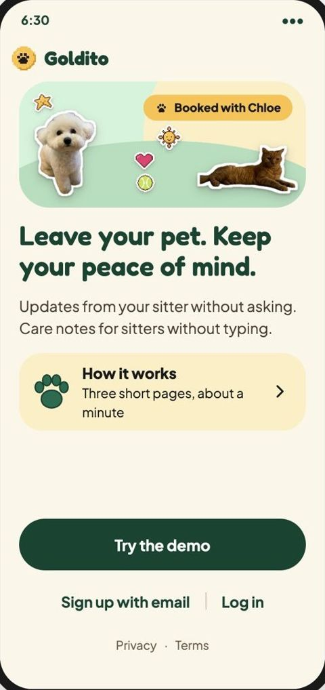
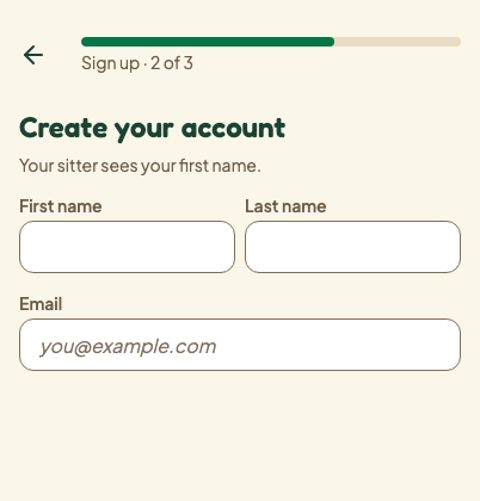

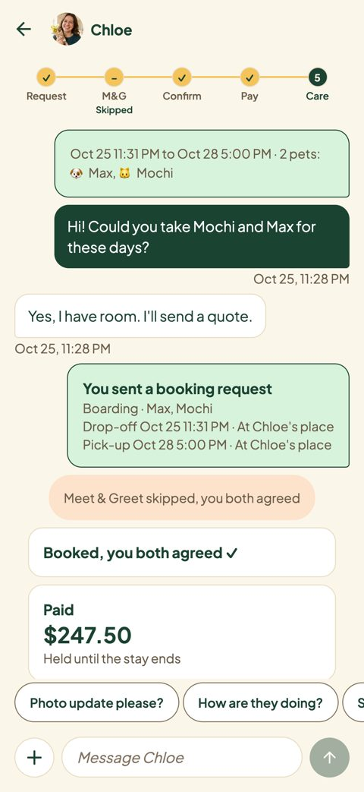
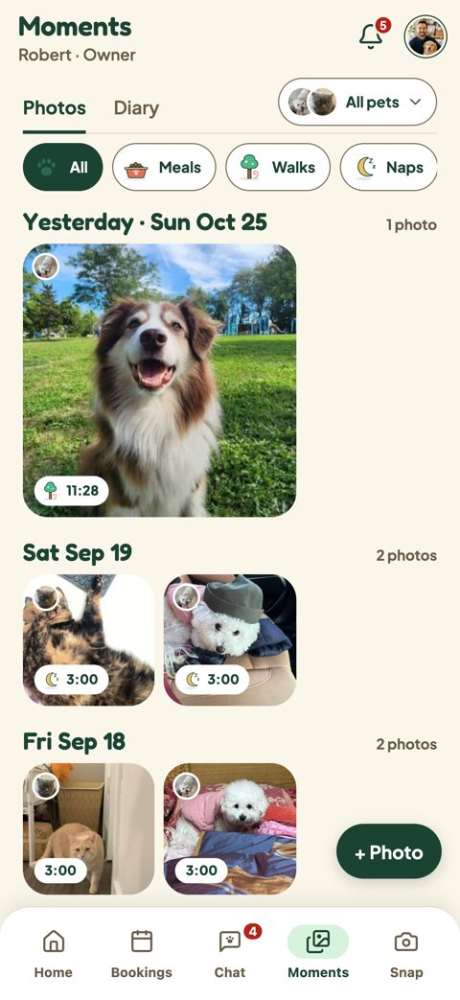
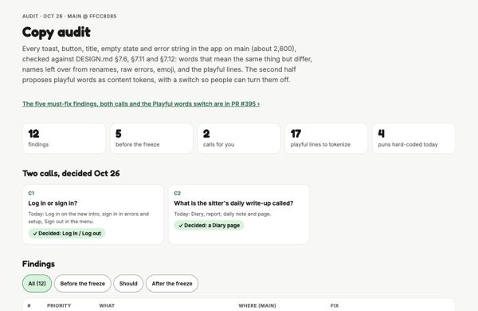
Decided결정
D17Minsik's nine Moments calls: picker in the tabs, all pets first, Days, Calendar and Footprints, stickers only for their maker, ask for a photo in Chat, diary pages start shared.민식님의 모먼츠 결정 아홉: 탭 안의 선택, 모든 펫 먼저, 날짜·캘린더·발자취, 스티커는 만든 사람만, 사진 요청은 채팅, 다이어리는 공유로 시작. ›D18Mook's 12 UX calls: drafts and Discard?, Undo 6 s, ✕ Close on photos, errors by job, notifications wait, Done-only live sheets, one primary, Accept.Mook의 UX 결정 12: 초안과 확인, 실행 취소 6초, 사진 ✕ 닫기, 역할별 오류, 알림 대기, 완료만, 주 버튼 하나, Accept. ›D19The fifth tab is Snap; the logo is the pixel gold coin.다섯째 탭은 스냅; 로고는 픽셀 금화.D20Back is the ← arrow alone, once per screen, read aloud as Back.뒤로는 ← 화살표만, 화면당 하나, 읽을 땐 Back. ›D21Sign out keeps its confirm sheet, in the menu and Settings.로그아웃은 메뉴와 설정에서 확인 시트 유지.CopyLog in and Log out, not Sign in; the sitter's daily write-up is the Diary page; playful words live behind a switch.Log in과 Log out (Sign in 아님); 시터의 하루 기록은 다이어리 페이지; 재치 있는 말은 스위치로. ›MomentsThe tab stays Moments; the sitter's notes live on Home only.탭은 모먼츠; 시터 노트는 홈에만. ›All recorded in DESIGN.md on main and on the Figma plugin's decisions board.모두 main의 DESIGN.md와 피그마 플러그인 결정 보드에 기록.
Design pages from today오늘의 디자인 페이지
Plans
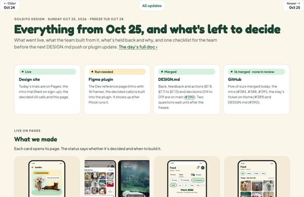
Oct 25 rundown링크와 체크리스트Every link and the decisions checklist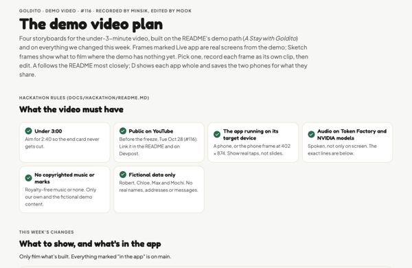
Demo video plan데모 영상 계획Four storyboards with live screens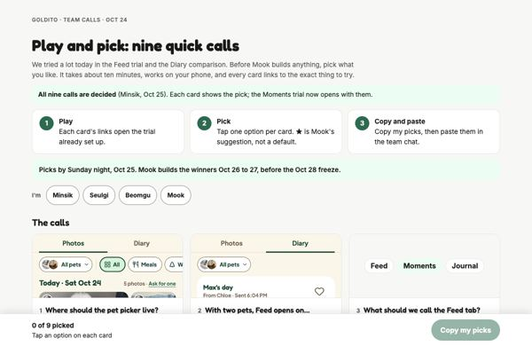
Play and pick해 보고 고르기Minsik's nine calls, decidedTrials
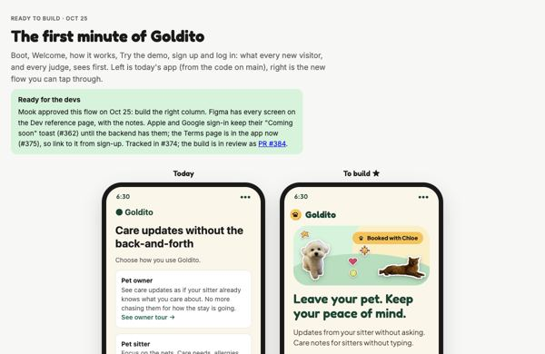
Intro인트로The first minute, now in the app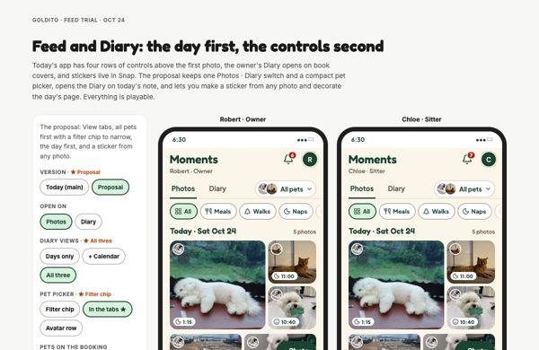
Moments모먼츠Photos, notes, the viewer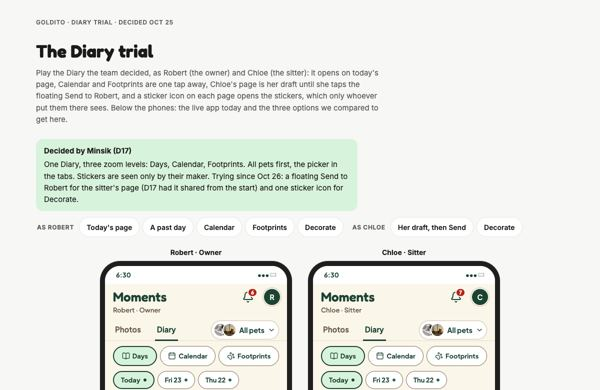
Diary다이어리The decided Diary, as Robert and Chloe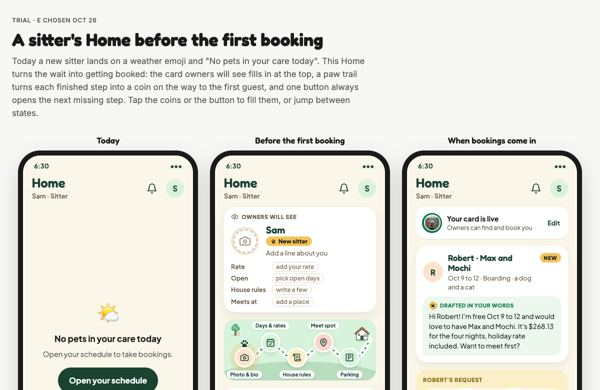
Sitter Home시터 홈Before the first booking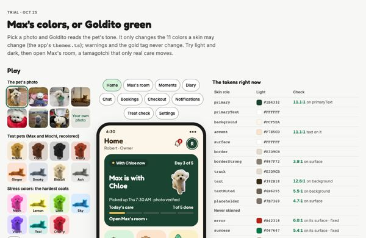
Pet tone펫 톤The pet's colors, light and dark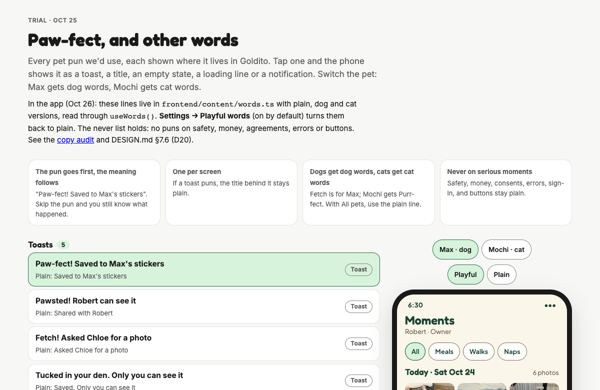
Playful words재치 있는 말17 puns where they'd live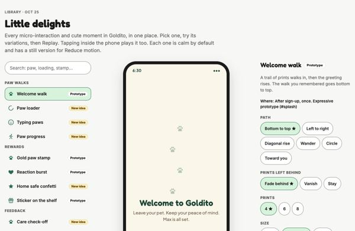
Little delights작은 즐거움Every micro-interactionAudits
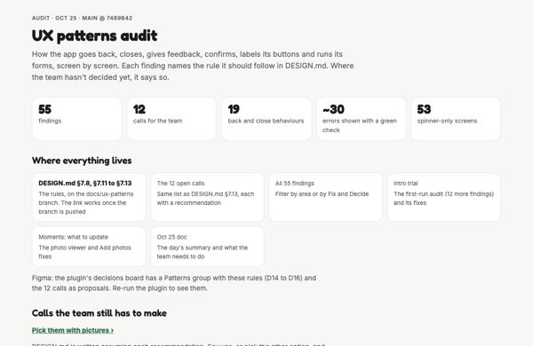
UX auditUX 점검55 findings in back, feedback, actions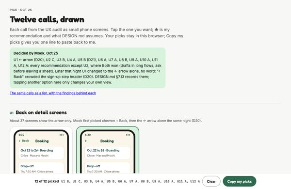
UX callsUX 결정12 calls, decided and builtCopy audit카피 점검12 findings, fixes in #395Pets and the prototype
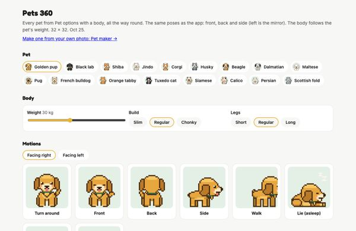
Pets 360펫 360Every pet in the app's poses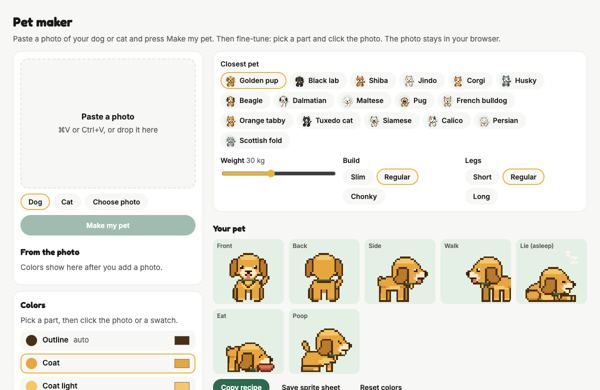
Pet maker펫 메이커A photo becomes your pet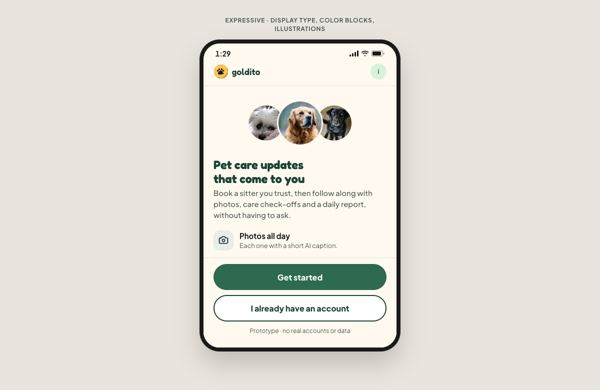
Prototype프로토타입28 new screens, the stay ticket on HomeFor Devpost
To do할 일
Before the freeze and submission동결과 제출 전
After the freeze동결 후
Merged and closed머지와 종료
25 PRs merged on Oct 25 and 2610/25~26 머지된 PR 25개
| #384 | The new intro | Design |
| #388 | Intro polish: How it works card, Privacy and Terms, role pictures | Design |
| #391 | Sign-up steps say Next | Design |
| #393 | The UX calls (fixes #383) | Design |
| #389 | The stay ticket on Home | Design |
| #390 | DESIGN.md: Back, feedback and actions | Design |
| #394 | DESIGN.md: Sign out keeps its sheet (D21) | Design |
| #395 | Copy audit must-fixes | Design |
| #346 | Moments tab | Minsik |
| #357 | Home pet card, chat list, phone numbers | Minsik |
| #360 | Demo reset leaves a past | Minsik |
| #361 | Discord MCP for the team | Minsik |
| #363 | Accepted-booking demo starts tomorrow | Minsik |
| #376 | Chat as the booking request | Minsik |
| #362 | Login and sign-up screens | Seulgi |
| #375 | Terms of service | Seulgi |
| #379 | Sheet and picker components | Seulgi |
| #385 | Demo photos and video library | Seulgi |
| #387 | Sign out asks in a sheet | Seulgi |
| #392 | Sign-up page fix | Seulgi |
| #359 | Chat cards take sides | Beomgu |
| #377 | Owner sign-up address and Back | Beomgu |
| #378 | Toast above the bottom | Beomgu |
| #380 | Foods step goes on | Beomgu |
| #386 | Diary picture box and stickers | Beomgu |
23 issues closed종료된 이슈 23개
#383 One Back per screen · #374 Welcome and Sign-in in Figma · #373 Cat sample photos · #372 Hide Apple and Google on sign-up · #371 Toast placement · #369 Diary picture box · #368 Agree to all at checkout · #366 Owner sign-up fixes · #365 Real street from location · #358 Phone numbers · #356 Nested buttons · #345 Moments · #339 Track a walk · #289 Chat sides · #281 Meet & Greet skip · #263 Chat names and photos · #238 Chat replies · #231 Cancelled cards · #179 Sitter search calendar · #119 Coat skins and sprites · #115 Large-text onboarding · #113 Sample photos · #112 Scenario screens in Figma
Notes from the day그날의 노트
Every write-up, in detail (16)모든 기록, 자세히 (16)
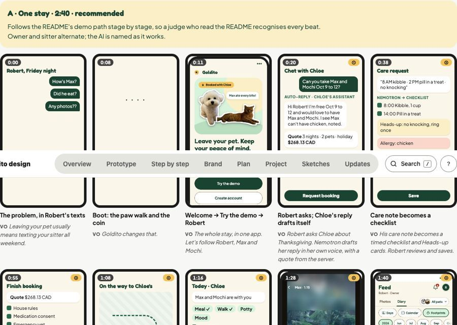


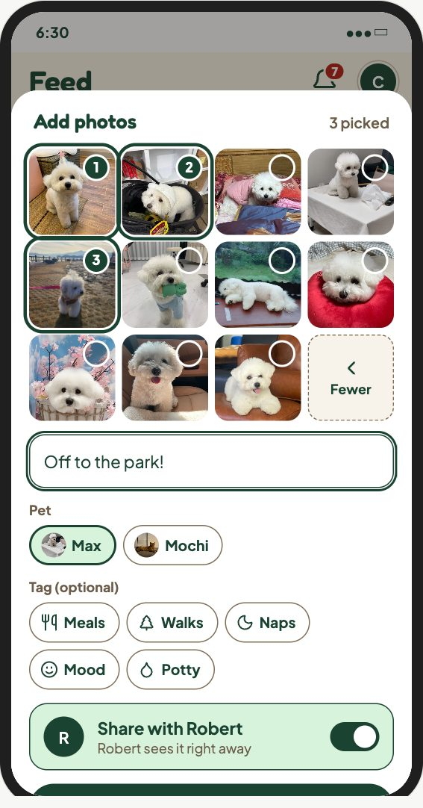


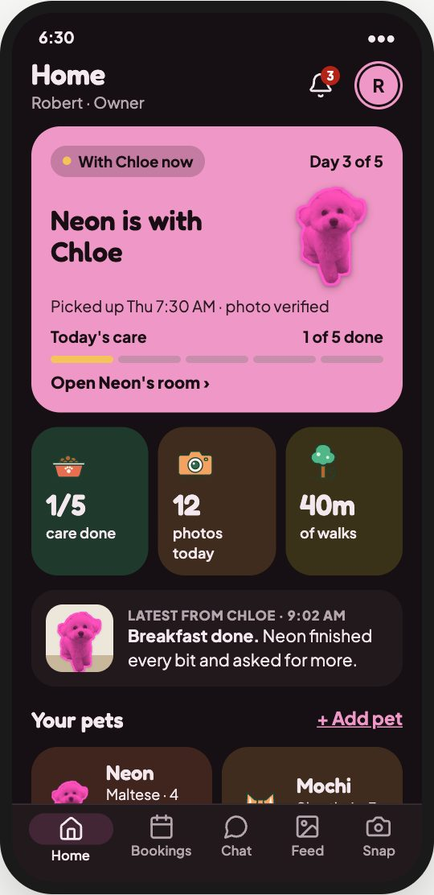


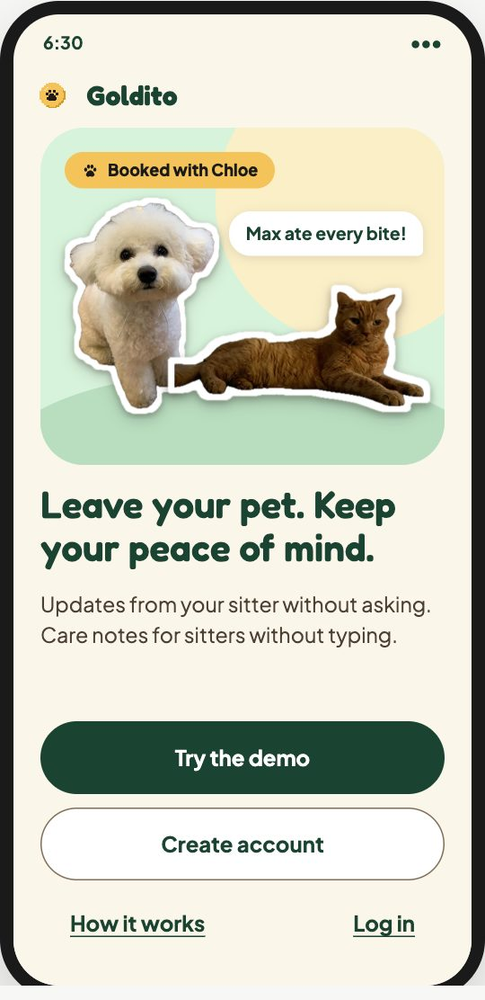
The rundown한눈에 보기 · The video plan영상 계획 · All updates모든 업데이트